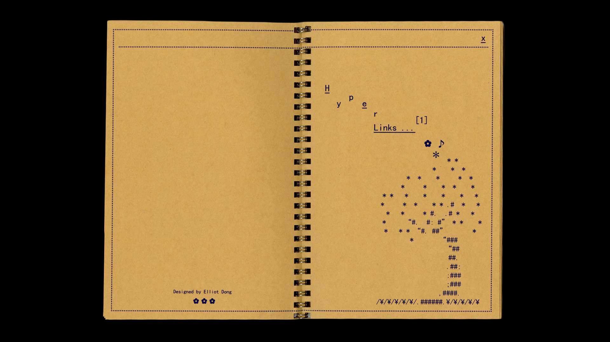
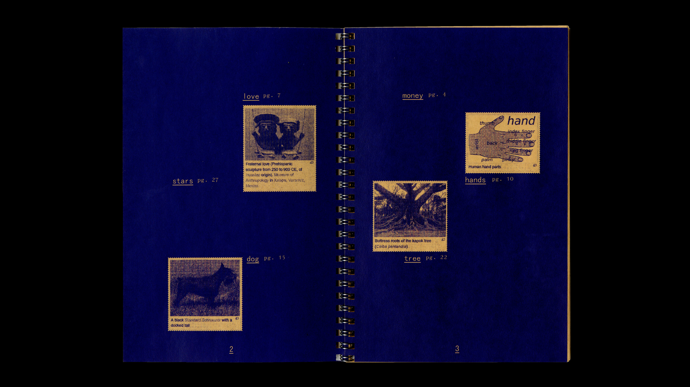
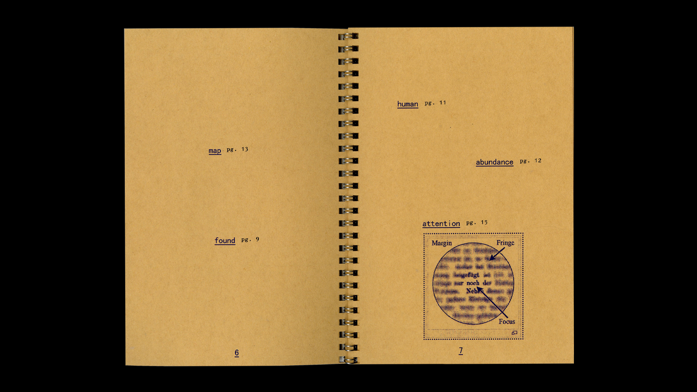

Elliot Dong
Hyper Links...
↳ Fall 2025
book
A book exercise exploring the cyclical nature of hypertexts and the creation of paths, associations, and meanings. 6 by 9 inches. Printed on 105 gsm paper and spiral bound.


